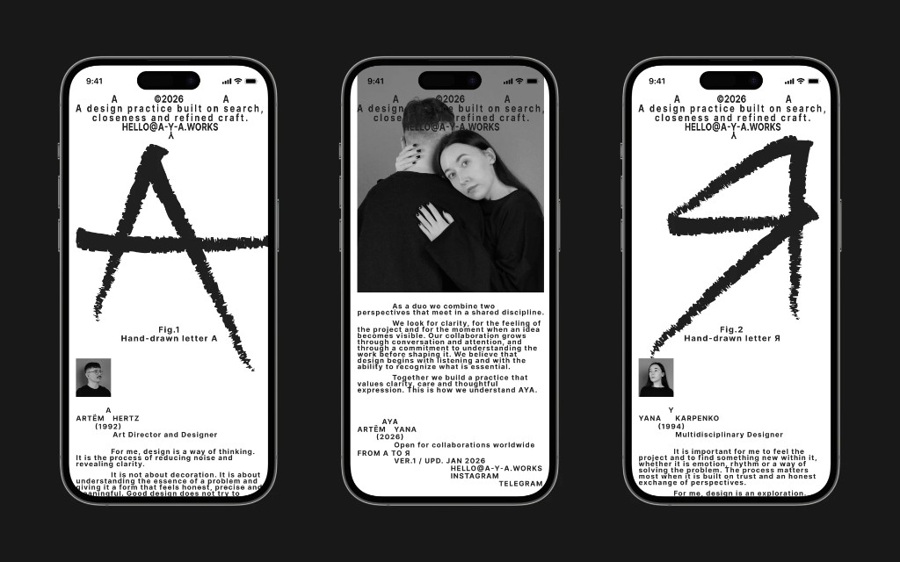
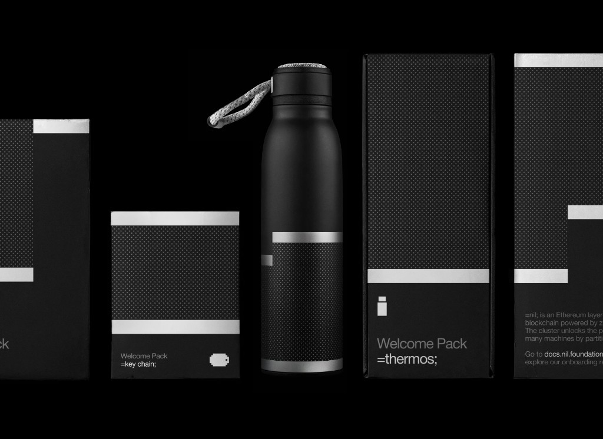
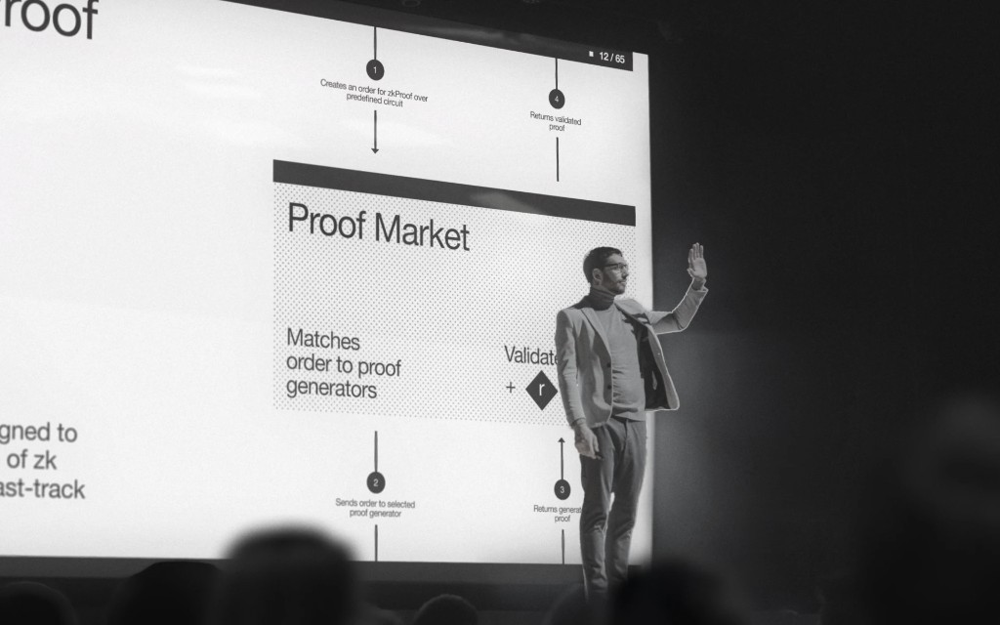
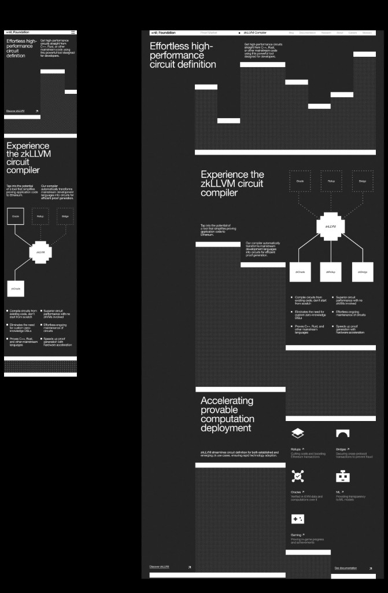
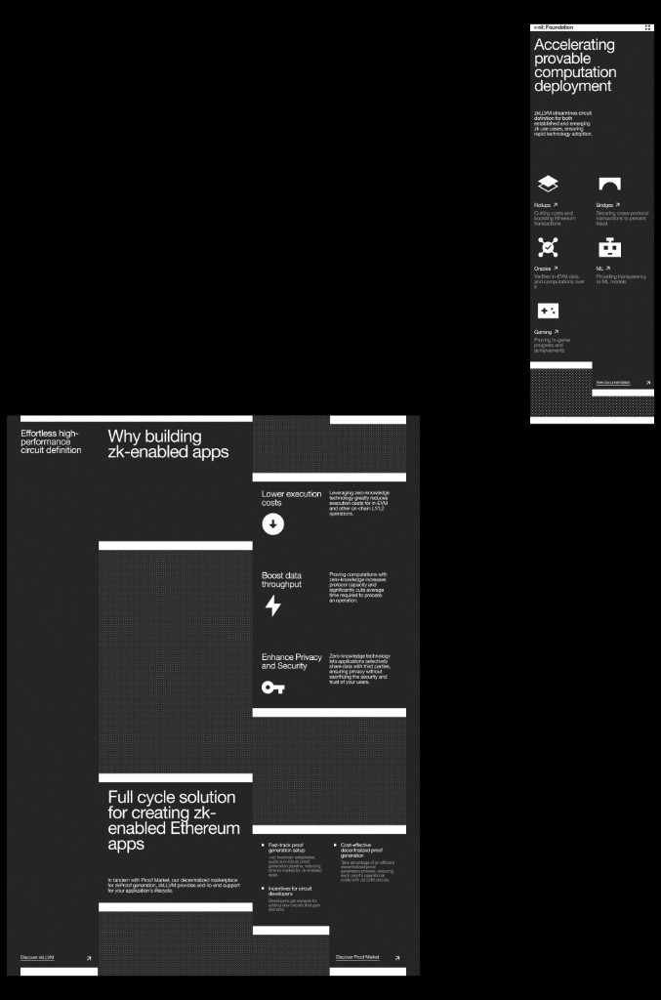
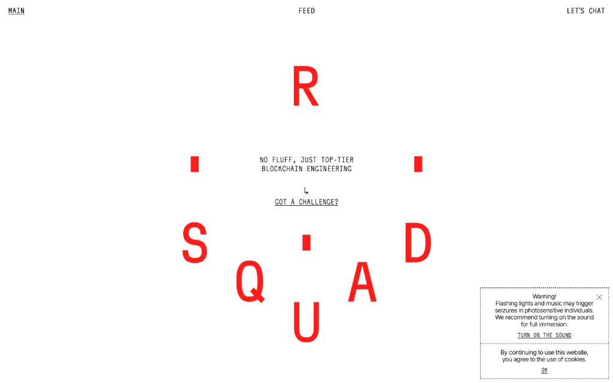
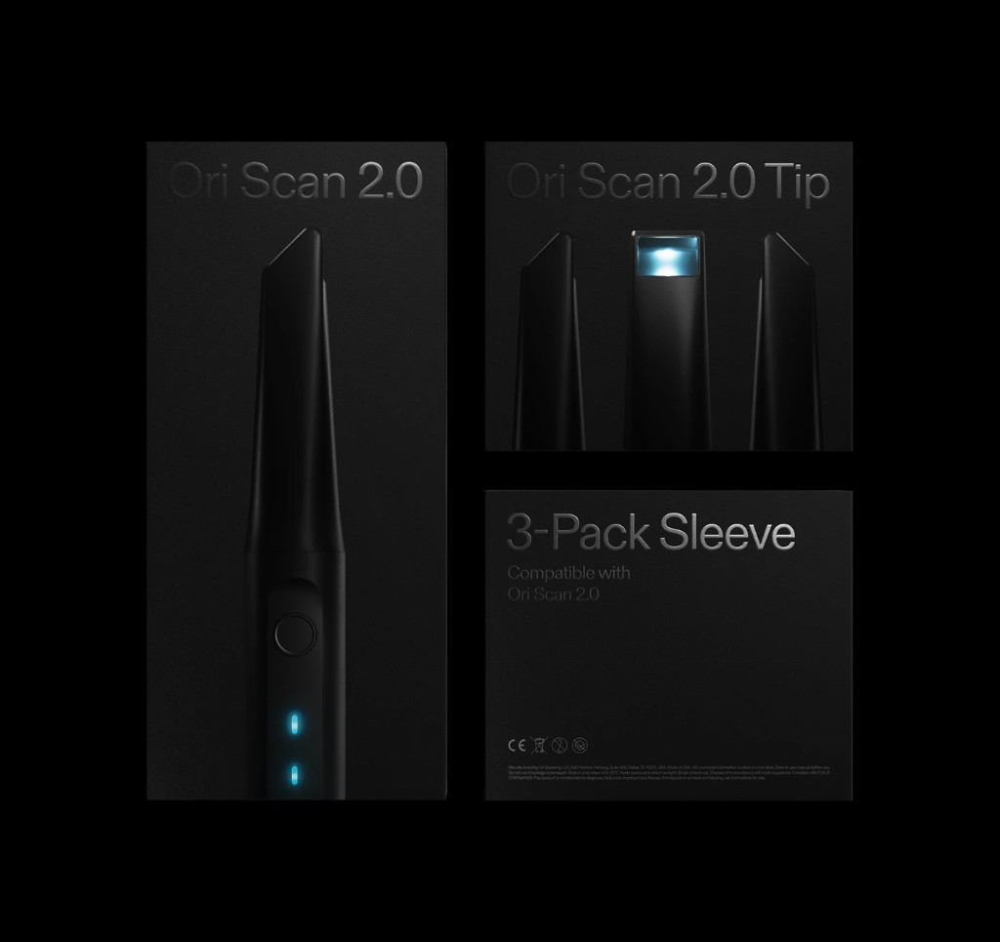
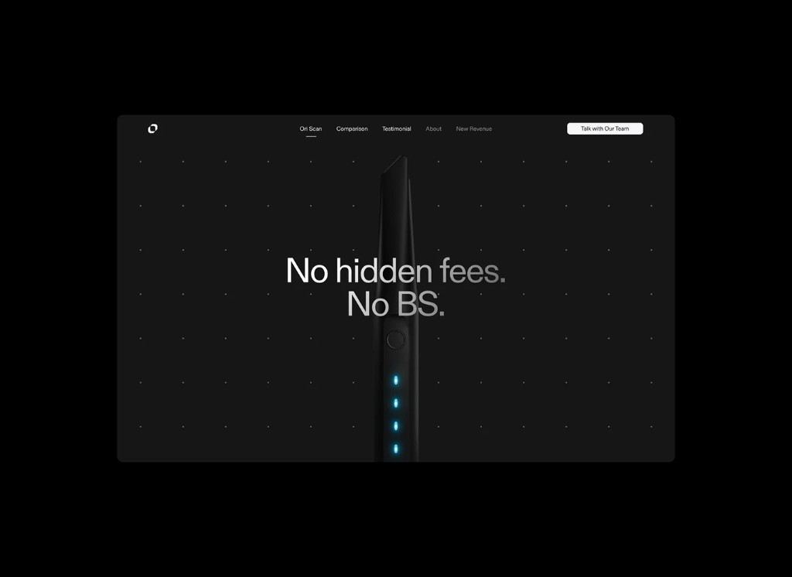
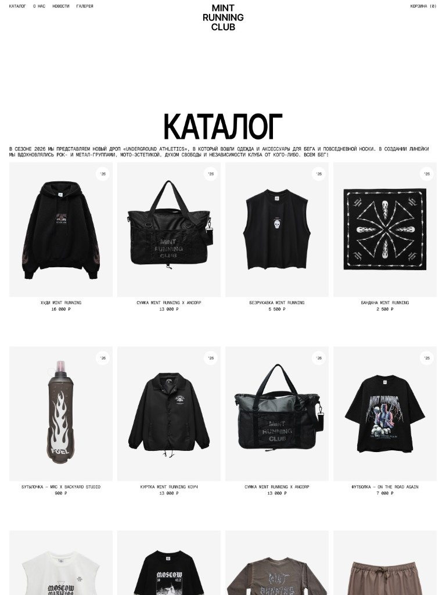
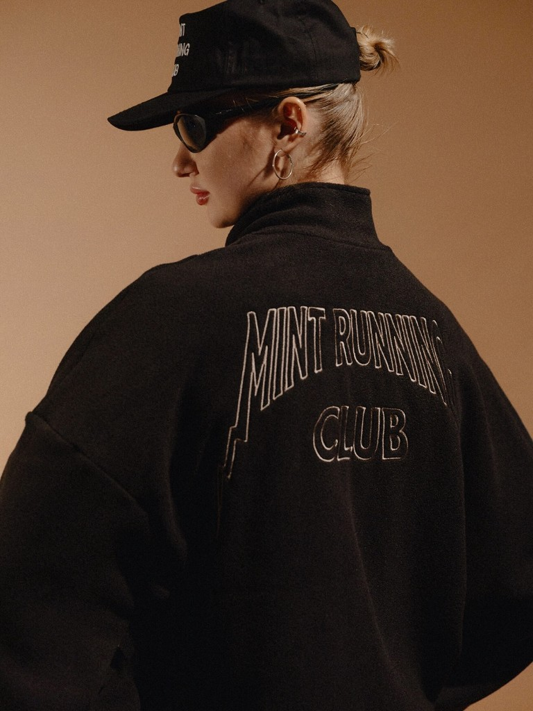

Язык с нуля в айдентике: Redis, Nil Foundation и честность в решениях

Как ты для себя определяешь культуру дизайна? Что в это понятие входит – принципы, ценности, ритуалы внутри команды, подход к принятию решений, ответственность – или что-то иное?
Для меня культура дизайна – это то, как команда думает, принимает решения и несёт ответственность. Это принципы, дисциплина, уважение к задаче и умение докопаться до сути.

Немного о твоём пути: почему дизайн и что в нём тебя больше всего драйвит сейчас? Интересно на примере 1–2 кейсов, которые особенно повлияли на твоё восприятие дизайна или подход.
В дизайн я пришёл естественно: мне всегда было важно понимать, как работает вещь и почему. Сейчас меня драйвит работа там, где нужно создать язык с нуля, а не следовать шаблону.
Nil Foundation – Nil стал точкой входа в блокчейн. Основой визуальной системы стала метафора ключ-формулы и знак равенства (=) как символ решения и эквивалентности. Важно было создать честный язык, который делает технологию понятнее и структурнее.
RSquad – проект, который стал точкой роста: про поиск выразительности в технологичной среде, где много одинаковых решений и мало подлинного характера. Пока не раскрываем детали, но он точно повлиял на мой подход.





Про персональный рост: какие внешние влияния (команды, сообщество, менторы, книги) были для тебя самыми значимыми? Как менялись источники вдохновения?
На меня сильнее всего влияли:
– Команды, с которыми я работал. Ты постоянно учишься у людей рядом, иногда даже неосознанно.
– Сообщество дизайнеров. Наблюдение за коллегами формирует насмотренность лучше любых книг.
– Менторы и арт-директора, с которыми у меня была возможность работать. Они помогали развивать критическое мышление, не давать слабину и видеть дальше входящих задач.
Источники вдохновения менялись. Раньше это были визуальные референсы и кейсы. Сейчас всё больше вдохновляют контексты, идеи, исследовательские подходы и чужие логики принятия решений.
Какие рабочие практики или ритуалы остаются неизменными? Что поддерживает и заряжает больше всего? Есть ли повторяющийся паттерн, который ты замечаешь?
– Пауза перед стартом. Никогда не ныряю в задачу сразу. Мне нужно время, чтобы почувствовать её контекст.
– Проверка решений на честность. «Я это делаю, потому что так правильно или потому что я привык так делать?» – этот вопрос часто звучит в моей голове.
– Привычка доводить. Для меня важно, чтобы вещь была завершена с уважением к ремеслу, даже если срок минимальный.
– Повторяющийся паттерн – я всегда возвращаюсь к сути. Если теряется фокус, нужно вернуться к тому, зачем решение вообще существует.
Расскажи про опыт в студии Redis. Как ты переводил ценности в дизайн-решения? На что опирался в первую очередь, а что оставалось вторичным? В центре внимания – вижен и большая идея, польза для других, этичность, метрики или что-то ещё?
В Redis мы старались держать фокус на сути: что важно клиенту и что делает продукт понятнее. От этого и отталкивались дизайн-решения.
Хороший пример – OriScan. В проекте Ori стояла задача показать реалистичную 3D-модель зубов и рта, чтобы честно передать принцип работы технологии. Но буквальная анатомичность выглядела тяжело и вызывала дискомфорт.
Мы искали баланс между:
– реалистичностью, которая важна клиенту, – и визуальной выразительностью, которая делает продукт воспринимаемым.
Мы убрали избыточную детализацию, сохранили ключевую форму, фактуру и логику. Так появилась визуализация, которая точно отражает продукт, но при этом остаётся аккуратной, чистой и не перегружающей.
Это как раз пример того, как ценности Redis формировали результат: мы выбирали честность и пользу, а не эффект ради эффекта.


Что такое качество? Что такое хороший дизайн?
Качество – это внимательность, уважение к ремеслу и способность объяснить своё решение. Хороший дизайн решает задачу, держит контекст и остаётся понятным без оправданий.


Крафт и технологии (AI) – видишь ли ты конфликт между этими понятиями или они усиливают друг друга?
AI не конфликтует с крафтом – конфликтует лишь ленивое использование инструментов. Если дизайнер понимает, что он делает, AI усиливает поиск и освобождает время для смысла. Но вкус, ответственность и мышление он не заменит.